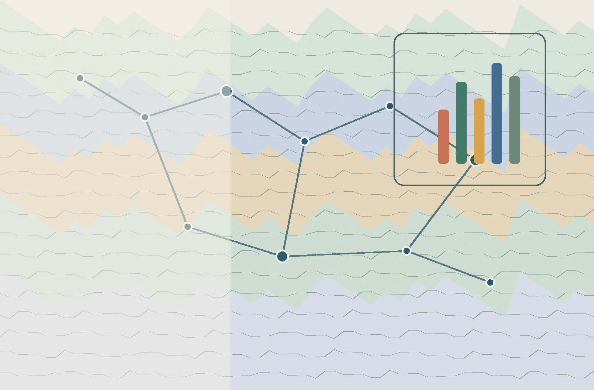

Member banks supported through responsible banking survey analysis.

Sustainable finance | Disability inclusion | Environmental policy
Yuezhang Yao
International environmental policy graduate student with hands-on United Nations experience in responsible banking, disability inclusion, field assessment, and evidence-based sustainability strategy.
Staff reached through disability inclusion training support.
UNRWA facilities assessed against disability inclusion standards.
United Nations experience
Building practical sustainability systems for international organizations.
UN
UNEP Finance Initiative
Sustainable Finance & Responsible Banking
HR and Regional Coordination Intern | Geneva | 2023-2024
Supported regional coordination for the Principles for Responsible Banking, helping transform survey data from 350+ member banks into analytical insights for regional planning and stakeholder communication.
- Contributed to survey design, data cleaning, and trend analysis.
- Prepared regional analytical reports and presentation materials.
- Worked at the intersection of ESG implementation, banking practice, and international coordination.
UN
UNRWA
Protection & Disability Inclusion
Protection Consultant | Jordan | 2025
Advanced disability inclusion work through donor-facing reporting, integrated assessments, and training support for field offices operating in complex humanitarian contexts.
- Authored factsheets, progress reports, and UNDIS annual reporting inputs.
- Supported integrated assessments across 10+ facilities near regional borders.
- Helped launch disability inclusion training for 300+ staff members in Gaza Field Office.
Project experience
Applied research, education, and sustainability-focused implementation.
SROI and ecosystem value assessment
Contributed to a public-interest coffee project in Nujiang, Yunnan, combining biodiversity monitoring, soil sampling, stakeholder interviews, and ecological-economic analysis.
UNDP China volunteer teaching
Taught STEM content for the Her and Digital Future project and integrated SDG perspectives into classroom learning for rural students.
Sustainable business and growth
Supported cross-border business communication and led digital growth strategy for a resort project, connecting market insight with responsible long-term operations.
Education
Environmental policy grounded in humanities, leadership, and international study.
2025-2027
Duke University
International Master of Environmental Policy, focused on environmental economics, ESG, carbon accounting, program evaluation, and environmental law.
2018-2023
Pepperdine University
Bachelor of Philosophy, Minor in French Studies. President of the Chinese Student and Scholar Association and co-founder of the Belonging Fellowship Award.
Personal
I love travelling because places teach policy in human scale.
Beyond research and international work, Yuezhang enjoys travelling, learning from local communities, and noticing how culture, ecology, and public systems shape everyday life.
Where I have lived, studied, and worked
Global path
UN
China
Home base and a place of field learning, from rural education work to sustainability research in Yunnan.
California
Studied at Pepperdine University in Malibu, building a foundation in philosophy, leadership, and global perspective.
Pennsylvania
Part of a broader U.S. academic and professional journey across policy, community, and public-interest work.
Switzerland
Worked with UNEP Finance Initiative in Geneva on responsible banking and sustainable finance coordination.
Jordan
Worked with UNRWA on protection, field assessment, and disability inclusion in humanitarian settings.
Profile
International, analytical, and cross-cultural fluency.
Yuezhang's work brings together ESG analysis, program evaluation, environmental economics, disability inclusion, and multilingual communication.
Core strengths
- ESG research
- Responsible banking
- Disability inclusion
- Program evaluation
- Carbon accounting
- Stakeholder interviews
- Power BI
- GIS
- Python
Languages
- Mandarin
- English
- French
- Spanish
Contact